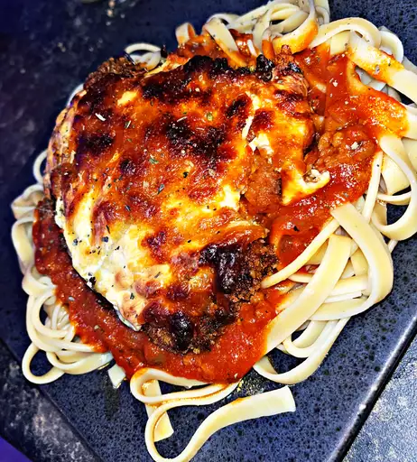

Chicken Parmesan
Recipe Description & Ingredient List

Recipe Description
Deliciously tender fried chicken topped with marinara sauce and mozzarella. With accompanied side of preferred pasta and marinara.
Ingredients
- Chicken Breast
- Tomatos
- Box of Prefrerred Pasta
- Mozzarella
- Bread Crumbs
- Two Eggs
- Flour
- Salt & Pepper
- Garlic
- Onion
- Paprika
- Olive Oil
Recipe Steps:
- Fill a pot with water, add salt an olive oil and bring to a boil.
- As water is heating up in a small sauce pot add olive oil and saute onions and garlic until tender and fragrant.
- Once onion and garlic are soft add crushed red tomatos from a can and freshly diced romano tomatos to the sauce pot.
- While water comes to a boil create flour, egg, and bread crumb bath.
- Butterfly chicken breast and roll with rolling pin until tender.
- Dip butterflied chicken breast in flour until fully coated, then proceed to dunk into egg bath, followed lastly by a dip in the bread crumb mixture.
- Once water has begun to boil add your pasta of choice into the pot until Al Dente.
- While pasta is boiling bring olive oil up to temperature and fry the covered chicken breast in the oil on both sides until crispy and golden brown.